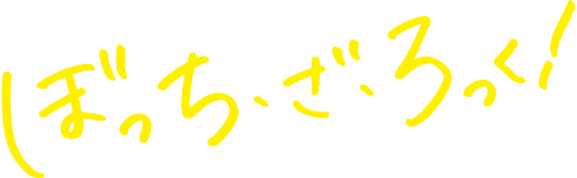

Kessoku Band
Kessoku Band (結束バンド Kessoku Bando) is the main unit band of Bocchi the Rock! series. The name "Kessoku Band" is a pun on "Kessoku" (unity) and "Kessoku Band" (cable tie). The band has been drawn as the center of this work. The unit band is based on Shimokitazawa's live house STARRY, where Nijika's older sister, Seika, is a store manager. Ryo named the band after the meaning of "cable tie". Kita joined the band after it seems happy to do our best. Kessoku Band performed the first two songs at the live house for the audition. The band performed again at the live house for the first time with audiences. The band performed Shuka High School Cultural Festival.
Members

Hitori Gotoh
Guitar

Ryo Yamada
Bass

Nijika Ijichi
Drums

Ikuyo Kita
Vocal, Guitar
Songs
(some of them)

That Band

Guitar, Loneliness and Blue Planet

Distortion!!

Never Forget

KaraKara

Whats is wrong with